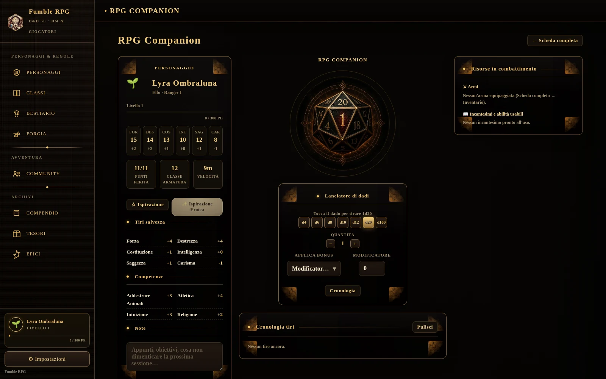
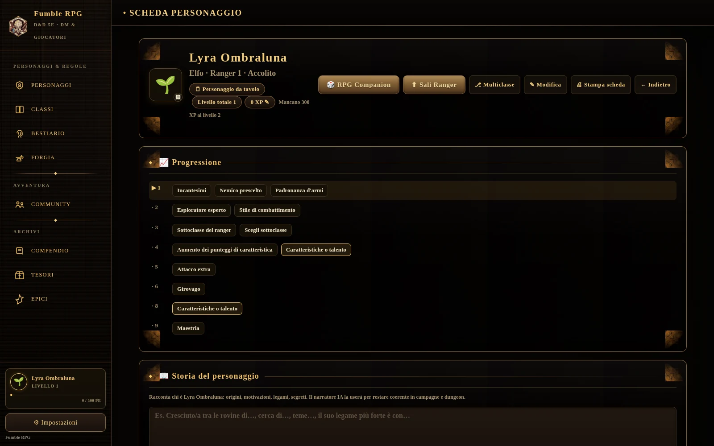
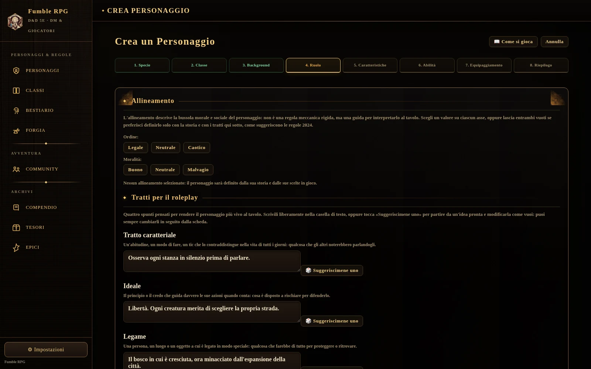
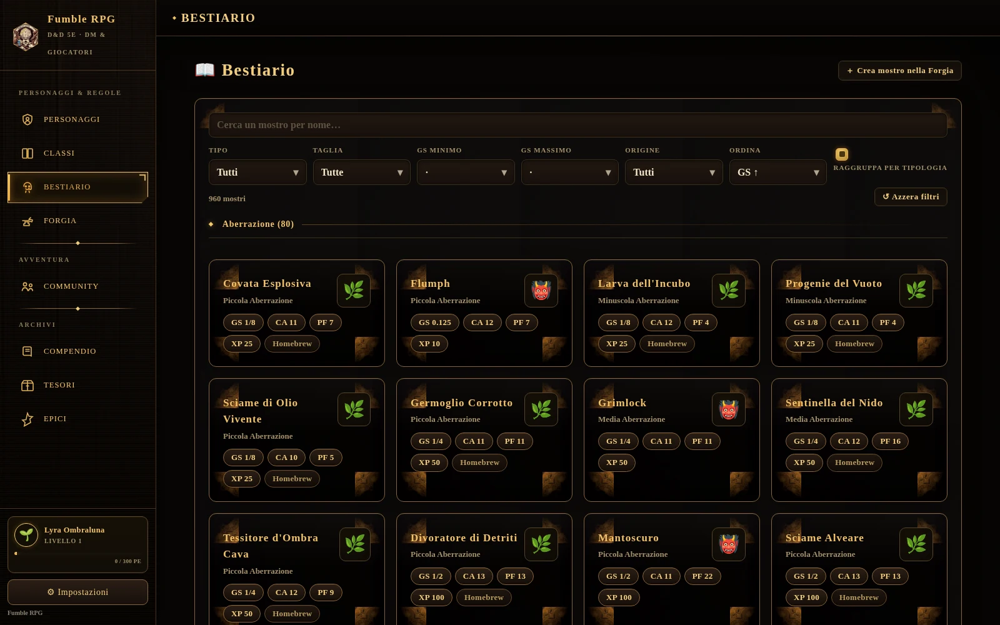
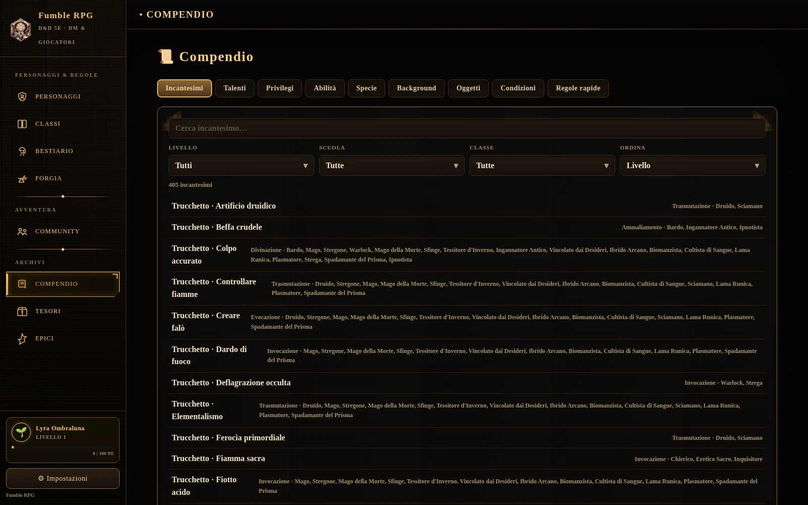

Il tuo tavolo di D&D, sempre con te
Crea personaggi, lancia i dadi, gestisci le campagne e consulta un bestiario di 960 mostri. Tutto in un'unica app, per Windows, macOS e Android.

Un compagno digitale, non l'ennesima app di dadi
Ogni schermata è pensata per restare al tavolo, non per portartene via.
Tutto il personaggio, sempre a portata di tocco
Caratteristiche, tiri salvezza, competenze, privilegi guadagnati livello per livello: la scheda si aggiorna da sola quando sali di livello, senza calcoli a mano.
Esporta la scheda in PDF quando vuoi stamparla o condividerla fuori dall'app.

Allineamento e tratti da roleplay
In creazione scegli l'allineamento del tuo personaggio su due assi (ordine e moralità), con la spiegazione di cosa comporta al tavolo per ciascuno dei nove risultati possibili.
Poi definisci tratto caratteriale, ideale, legame e difetto: scegli un suggerimento standard o scrivi il tuo. Il narratore IA li userà per restare coerente con chi hai creato.

960 mostri, filtrati come li cerchi davvero
Per tipo, taglia, grado di sfida o origine: mostri ufficiali e creazioni homebrew fianco a fianco, ognuno segnalato per quello che è.
Puoi anche crearne di nuovi nella Forgia, per una campagna che ha bisogno di un mostro che non esiste ancora.

Le regole, senza sfogliare i manuali
405 incantesimi, talenti, privilegi, oggetti, background e condizioni: cerca, filtra per livello, scuola o classe, e trova la regola esatta in pochi secondi.

Hai domande su RollOne?
Dai un'occhiata alle domande più frequenti oppure scrivimi direttamente.
Consulta le domande frequentiDomande frequenti
Hai dubbi su come scaricare l'app o come funziona il multiplayer? Trova le risposte alle domande più comuni nella sezione dedicata.
Sì. RollOne è gratuita, senza pubblicità e senza acquisti in-app, sia su Windows e macOS sia su Android.
No. Le funzioni base funzionano offline, senza account. Continua a leggere nelle FAQ →
Windows, macOS e Android. Continua a leggere nelle FAQ →
Sì, insieme a quelli ufficiali. Continua a leggere nelle FAQ →
In fase di costruzione. Crei o ti unisci a una campagna condivisa: tutti i giocatori vedono gli stessi personaggi, la stessa mappa di battaglia e gli stessi segnalini in tempo reale.
Sì, come file. Continua a leggere nelle FAQ →
Contatti
RollOne è un progetto indipendente, senza sede fisica: puoi scrivermi in qualsiasi momento via email.